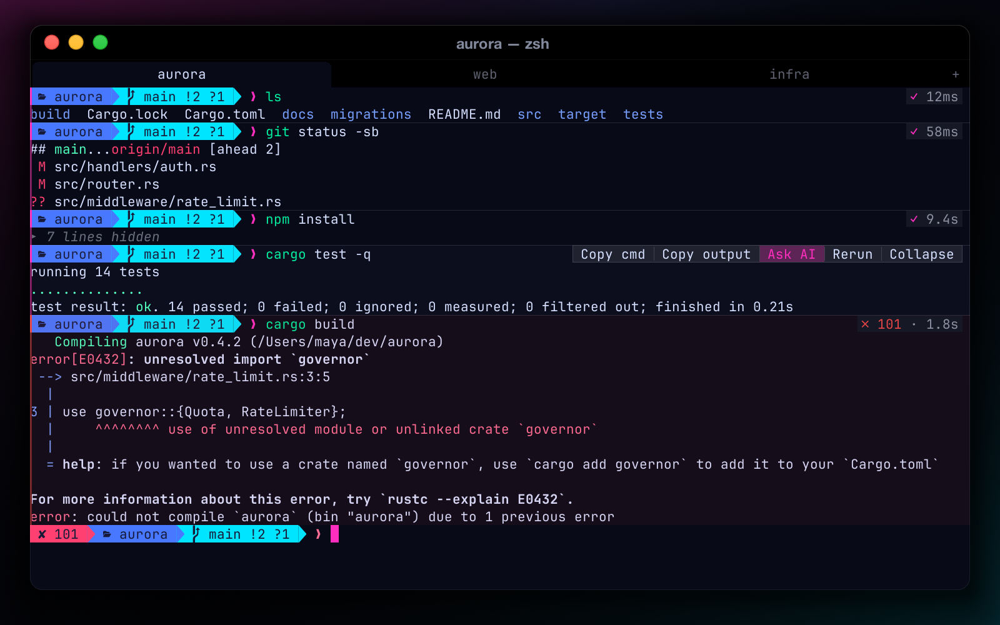

Command blocks
Every command and its output become a block, powered by OSC 133 hooks that Rift injects into zsh, bash and fish automatically — your rc files are never touched.
- Exit-code gutter plus duration and exit chips
- Hover toolbar: copy command, copy output, ask AI, rerun, fold
- Fold long output; jump between blocks with ⌘⇧↑ / ⌘⇧↓
